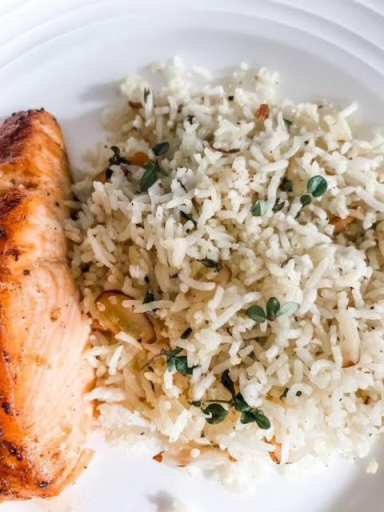

Lemon Herb Rice Pilaf
Food Description
A light and flavorful rice dish infused with fresh lemon and herbs, perfect as a side or main dish.
Total time: 25 minutes
Ingredient
- 1 cup basmati or jasmine rice
- 2 cups vegetable or chicken broth
- 1 tablespoon olive oil
- 1 small onion, finely chopped
- 2 garlic cloves, minced
- Zest and juice of 1 lemon
- Salt and pepper to taste
- 1 teaspoon of dried parsley (or fresh)
- 1 teaspoon dried thyme
Praperation Steps
- Rinse the rice under cold water until the water runs clear.
- In a pan, heat olive oil over medium heat and sauté the onion and galice until soften (about 3-minutes).
- Add the rice and toast it in the oil for 1-2 minutes, stirring frequently
- Pour in the broth, lemon zest, and thyme. Bring to a boil, then lower the heat to simmer.
- Cover the pan and cook the rice for 15-20 minutes.
- Serve immediately.